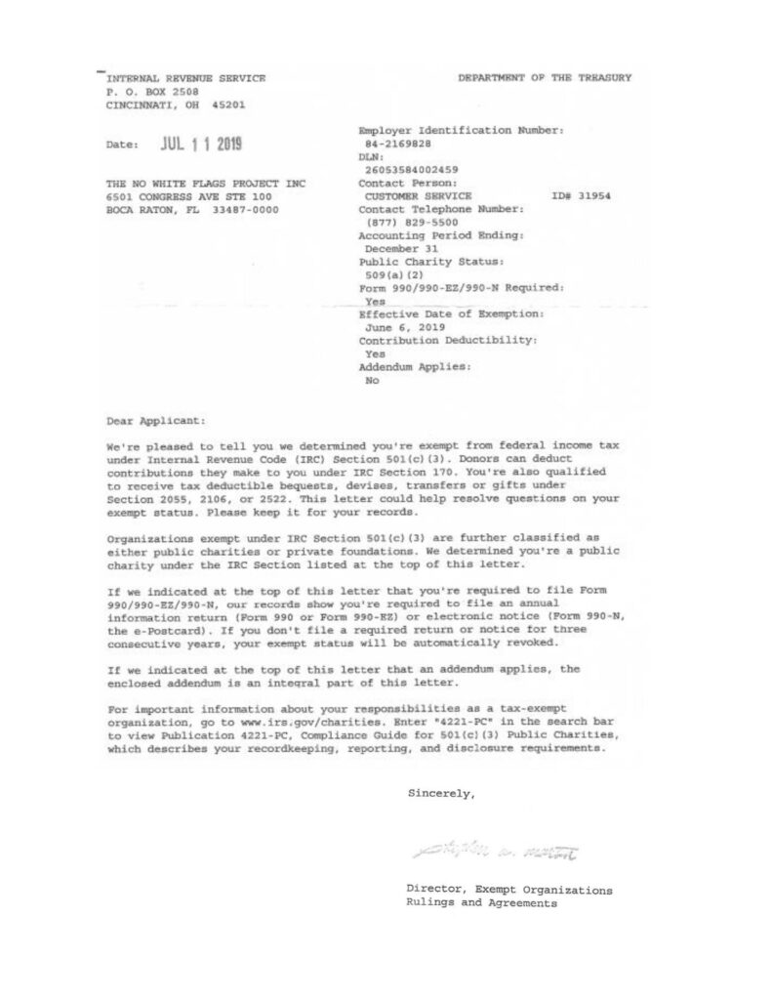

Losing Toilet Independence Takes a Toll
For someone with a physical disability, needing help with the most private moment of the day can feel like losing a piece of yourself. Bidets, body dryers, and complete bathroom conversions change that turning a daily struggle into a daily act of empowerment.
Since 2022
We've provided Tornado Body Dryers, Bidets, Delta Touchless Faucets, and tub-to-shower conversions at no cost to our clients removing barriers to personal hygiene and restoring safety, autonomy, and quality of life.
A Few of Our Happy Clients
Our Vision
Our vision is to revolutionize accessibility and dignity in personal care for individuals facing physical challenges by providing body dryers, bidets, and bathroom conversions, transforming daily routines into moments of independence, comfort, and empowerment.
Through our efforts, we strive to create universally accessible environments that promote inclusivity, enhance well-being, and contribute to a more equitable and compassionate society.
See What Your Support Makes Possible
Hear directly from the people whose privacy, safety, and independence are being restored through accessible bathroom equipment.
Common Questions
What is The No White Flags Project?
A 501(c)(3) nonprofit that provides bidets, body dryers, touchless faucets, and full bathroom conversions at no cost to people with physical disabilities.
How does a bidet or body dryer restore independence?
They remove the need for a caregiver's help with toileting and drying, giving people privacy and control over one of the most personal parts of daily life.
Is my donation tax-deductible?
Yes. We're a registered , so gifts are fully tax-deductible.
How can I volunteer?
Sign up on our Volunteer Hub to help with installation, community outreach, or virtual and administrative work.
How much does it cost to sponsor equipment?
Gifts start at $25 for hygiene accessories and range up to $1,500+ to fully sponsor a bathroom conversion. See our gift tiers for details.
